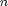
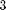
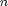
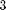
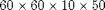
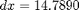
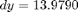
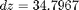

Contents
ejemplo de inversion en el tiempo de los campos de desplazamiento de los
La función import events transforma los archivos generados con script en python a una lista de objetos del tipo Event
ev = importEvents();
con los archivos ya importados en la variable ev =  $ donde $ es la cantidad de geosensores. tomamos un evento sísmico de los n existentes, podemos considerar por ejemplo, el evento 
$ donde $ es la cantidad de geosensores. tomamos un evento sísmico de los n existentes, podemos considerar por ejemplo, el evento 
index = 3;
% se invierte el campo de desplazamiento remuestreado.
[X, Y, Z, X_domain, Y_domain, Z_domain, T_domain] = reverse_signal(ev(index));
1 sensores de 10 totales validos de 10 ... 2 sensores de 10 totales validos de 10 ... 3 sensores de 10 totales validos de 10 ... 4 sensores de 10 totales validos de 10 ... 5 sensores de 10 totales validos de 10 ... 6 sensores de 10 totales validos de 10 ... 7 sensores de 10 totales validos de 10 ... 8 sensores de 10 totales validos de 10 ... 9 sensores de 10 totales validos de 10 ... 10 sensores de 10 totales validos de 10 ...
dominio de la inversión
el dominio definido por X_domain, Y_domain, Z_domain, T_domain son de $ cuya presición de la discretización está dada por $, $, $ metros y dependen de la cobertura de los geófonos, este cubo es en realidad el cubo de volumen mínimo que contiene a todos los geófonos.
visualizacion de la inversion de los datos
con las mediciones ya obtenidas de la unversión de las señales se considera la visualización de la norma del campo vectorial para visualización.